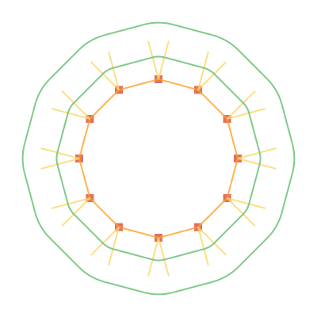

I have always been addicted to these:
So let’s paint some roads using the Haskell programming language.
A point is represented by the data type Point. We create a list of some example points.
data Point = Point Double Double
points = [Point 200 100, Point 100 300, Point 300 200]
We fill the canvas by white and draw each point by the functions drawMarkerAt and drawOneMarker.
drawOneMarker bw (r,g,b) = do
rectangle (-0.5*bw) (-0.5*bw) bw bw
setSourceRGBA r g b 0.8
fill
drawMarkerAt (Point x y) = do
save
translate x y
drawOneMarker 20.0 red
restore
paintCanvas = do
setSourceRGB 1 1 1
paint
mapM_ drawMarkerAt points
The result is an image surface of size 400x400px, which we write to a file.
createPng fileName = do
let w = 400
h = 400
img <- createImageSurface FormatARGB32 w h
renderWith img paintCanvas
surfaceWriteToPNG img fileName
The full code for the red dots is here: red-dots.hs
To connect the points, we define the data type for vector. The colors are represented as RGB or RGBA color.
data Vector = Vector Double Double
data RGBA = RGB Double Double Double
| RGBA Double Double Double Double
The colors now become
white = RGBA 1.00 1.00 1.00 1.00
red = RGB 0.88 0.29 0.22
orange = RGB 0.98 0.63 0.15
yellow = RGB 0.97 0.85 0.39
green = RGB 0.38 0.74 0.43
darkGreen = RGB 0.00 0.66 0.52
We get the line segments and corresponding vectors by
mkVector (Point x0 y0) (Point x1 y1) =
Vector (x1 - x0) (y1 - y0)
points = [Point 200 100, Point 100 300, Point 300 200]
segments = zip points (tail (cycle points))
vectors = map (uncurry mkVector) segments
The function uncurry from Prelude is used to unzip the tuple made by zip. To draw one vector, we use
drawVector (Point x y) (Vector dx dy) = do
setColor orange
moveTo x y
relLineTo dx dy
stroke
Again, we clear the canvas and paint the markers and vectors connecting them.
paintCanvas = do
setSourceRGB 1 1 1
paint
mapM_ drawMarkerAt points
mapM_ (uncurry drawVector) (zip points vectors)
The full code for the orange lines: orange-lines.hs
Next we find out the normals for each start- and endpoint. When the points are ordered counterclockwise, we get the outside pointing normal for a vector by
normal (Vector dx dy) =
Vector (-dy) dx
We need the magnitude of the vector, so we can draw a multitude of it’s unit vector.
dist (Point x0 y0) (Point x1 y1) =
sqrt ((sqr dx) + (sqr dy))
where
sqr x = x * x
dx = x1 - x0
dy = y1 - y0
magnitude (Vector dx dy) =
dist (Point 0 0) (Point dx dy)
unit r (Vector dx dy) =
Vector (r * dx / mag) (r * dy / mag)
where
mag = magnitude (Vector dx dy)
Besides points and segments, we now get the startpoints, endpoints, vectors between them and the unit normals:
points = [Point 200 100, Point 100 300, Point 300 200]
segments = zip points (tail (cycle points))
startPoints = map fst segments
endPoints = map snd segments
vectors = map (uncurry mkVector) segments
normals = map normal vectors
units = map (unit 1.0) normals
We stroke the normals in a loop
paintCanvas = do
setSourceRGB 1 1 1
paint
mapM_ drawMarkerAt points
mapM_ (uncurry (drawVector orange)) (zip points vectors)
mapM_ (uncurry (drawVector yellow)) (zip startPoints units)
mapM_ (uncurry (drawVector yellow)) (zip endPoints units)
The full code for the normals: yellow-normals.hs
The roadline is drawn using functions drawLine and drawArc. Function drawLine is used on straight paths and function drawArc on curves.
paintRoadLine r = do
mapM_ (uncurry (drawLine green)) (zip rStart rEnd)
mapM_ (uncurry3 (drawArc green r)) arcs2
where
rVec = map (unit r) normals
rStart = map (uncurry toPoint) (zip startPoints rVec)
rEnd = map (uncurry toPoint) (zip endPoints rVec)
We take some measurements from the Lego-plates
plateW = 100
roadMarks = [0.286, 0.307, 0.491]
r1 = plateW * roadMarks !! 0
r2 = plateW - r1
For an arc we need its center point, radius, start angle and end angle
drawArc color r (Point x y) angle1 angle2 = do
setColor color
arc x y r angle1 angle2
stroke
To get the calculations correct, we use testPolygon and testDodecagon as shape. For clarity the number tau = 6.28318530717958647692 is used instead of pi.
testPolygon = [Point 200 100, Point 100 200, Point 100 300, Point 300 200]
testDodecagon =
[Point (200 + radius * cos a)(200 - radius * sin a)| a <- angles]
where
radius = 100
corners = 12
angles = [i * (tau/corners) | i <- [0..corners-1]]

Given the vector, vectorangle can be calculated as follows:
vectorAngle (Vector x y)
| y >= 0 = acos x
| otherwise = -(acos x)
This is used to get the start angle and end angle of the arc. The function drawArc takes the center point, start angle and end angle as parameters. We have zipped them to a triple by the function zip3 so we need the function uncurry3 to unzip the parameters.
uncurry3 f (a,b,c) = f a b c
The full code for the green roads: green-roads.hs
So far we have only used convex polygons as shape. Next we should deal with concave cases, where the curve turns to other direction…